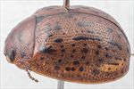
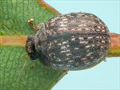
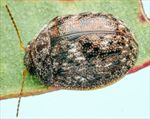
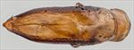
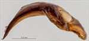
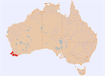

Click on images to enlarge


Female, Osmington, SW Western Australia




Male, Manjimup, SW Western Australia


Aedeagus, dorsal view (Manjimup, SW Western Australia)


Aedeagus, lateral view (Manjimup, SW Western Australia)


Distribution
Name
Trachymela sp. Ta188
Reference specimen
2023-100a, Manjimup, SW Western Australia.
Adult Description
Length: ♂ 6.4–6.7 mm (n=3), ♀ 7.4–8.3 mm (n=9).
Colouration:
- Head: mid-brown, rarely almost completely so, but more often with some black areas, most often including one or more of: the area between eyes and antennal insertions, along the fronto-clypeal suture, and at rear of frons (usually visible only with head protruded slightly), less often the whole of clypeus is black, or rarely, black extends to anterior of frons; labrum yellowish-brown, mandibles with black tips; antennomeres 1–4 uniformly light brown, 5–11 variable, sometimes uniformly darker or grading towards darker brown or even black at apex, usually only distal and lateral edges are darker.
- Pronotum: brown, concolorous with or fractionally darker than head, with 4 black maculae present – the inner two are positioned with their lateral edge level with inside edge of each eye and slightly anterior to centre of pronotum, the outer one is directly behind centre of eye and centred longitudinally; these maculae are usually similar-sized or inner spots may be slightly larger, rarely inner and outer maculae are joined into a single macula.
- Scutellum: completely black, or brown with margins broadly edged in darker brown or black.
- Elytra: brown, concolorous with pronotum, with small, round or longitudinally extended black verrucae scattered somewhat unevenly, though clearly arranged in longitudinal series, over surface of disc; antero-median depression is less densely populated with verrucae; rows VR3, VR5 and VR7 generally have the higher density and most longitudinally extended verrucae; VR10 often appears as a row of black pustules extending along the margin of discal area starting under the humeral callus and continues into marginal sulcus in posterior third almost to apex; the elytral suture is usually very narrowly edged in black or dark-brown; punctures concolorous with or very fractionally darker than interstices; humeral callus black.
- Venter & Legs: head mostly black, thoracic ventrites black, legs contrasting light- to mid-brown, abdominal ventrites black or dark brown, elytral epipleura black, usually with outer edge brown, rarely completely brown.
- Cuticular Wax: greyish, scattered unevenly over much of dorsal surface, often in the form of dashed longitutudinal lines as it is concentrated in the verrucal rows in the interstices between the verrucae.
Morphology:
- Shape: very evenly rounded over middle of dorsal surface viewed laterally, with curvature flattening anteriorly over pronotum and head and increasing posteriorly to meet ventral surface at a steep angle, greatest height viewed laterally is clearly in front of middle of elytral margin.
- Head: punctures small (pd ≈ 1–1.5 × ef), very evenly and densely distributed, surface with only a few wrinkles. Antennae very short (AL/BL: ♂ 40–42%, ♀ 34–35%), filiform, outer segments noticeably flattened.
- Pronotum: almost evenly curved transversely with lateral margins very slightly explanate, foveal depression shallow with a small clearly defined and almost round elevated and more sparsely punctured area in middle, puncturation usually clearly impressed, similar in size to those on head and evenly distributed in discal area, becoming much coarser from foveal depression to lateral margins, interstices smooth in discal area, rarely slightly rough but never so as to obscure punctures. Thick front margins join somewhat thinner lateral margins in a smoothly rounded right-angle, with lateral margin initially almost straight for more than halfway to posterior margin before curving smoothly and gradually towards rear margin, becoming considerably thicker near rear margin; pronotum widest close to rear margin.
- Scutellum: smooth or shagreened, rarely rugose; unpunctured or, less often, with a few very shallow punctures.
- Elytra: surface evenly curved transversely over discal region, sometimes slightly explanate at margins, antero-median depression shallow but noticeable, punctures large and distinct and relatively evenly distributed between the verrucae and set deeply among the network of slightly raised interstices, much finer punctures are scattered on the interstices, relatively large black verrucae, usually clearly arranged in longitudinal series, sometimes with a small puncture in centre, are present over almost whole surface, with their distribution described in the colouration section above, marginal sulcus relatively deep in posterior third, surface continuous under humeral callus. Vertical extension of epipleura considerable (HCE/PW = 0.34–0.36).
- Venter: prosternal process narrowest, less often almost parallel-sided anteriorly, open or very lightly closed anteriorly, short setae sparsely distributed over prosternal process and mesoventrite, a single seta on anterior and median trochanter; front edge of metaventrite beveled, truncatea, epipleura lacking setae or with a few very short and scattered setae along inner edge in posterior quarter.
Male Genitalia (Aedeagus):
- Dimensions: short (LPE/BL = 26–28%), lanceolate.
- Dorsal view: shaft widest at rear with sides initially parallel from basal sulcus to about middle, then converging in an almost straight line to tip, a slight unevenness in the convergence producing a weak concavity in each side near ostial opening; sides strongly sclerotized in contrast with the membranous dorsal surface; a dorso-median channel well-defined and long, ostium very small, tip triangular.
- Lateral view: shaft sharply curved at 120° a short distance in front of basal sulcus, lower edge towards apex from curve only very lightly curved until close to apex where there is a slight increase in curvature, tip deflexed.
Immature Stages
Unknown.
Similar species
- Ta154: a smaller species, with very little overlap in the size distribution. The distribution of verrucae on the elytra is slightly denser than that of Ta188 and the arrangement into verrucal series is not as clear. It has a very dark ventral surface with contrasting lighter brown legs like Ta188, but almost always has brown inner epipleura. The aedeagus is essentially identical to that of Ta154 in both size and shape. The arrangement of cuticular seems to differ between the two species, with that of Ta188 often arranged at least partially in linear series.
Notes
Copyright © 2026. All rights reserved.